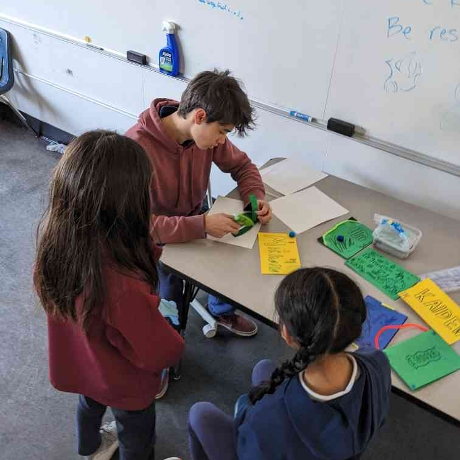
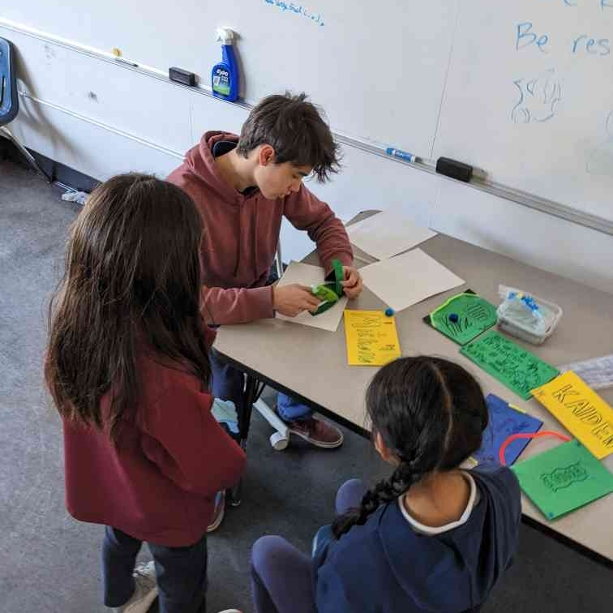
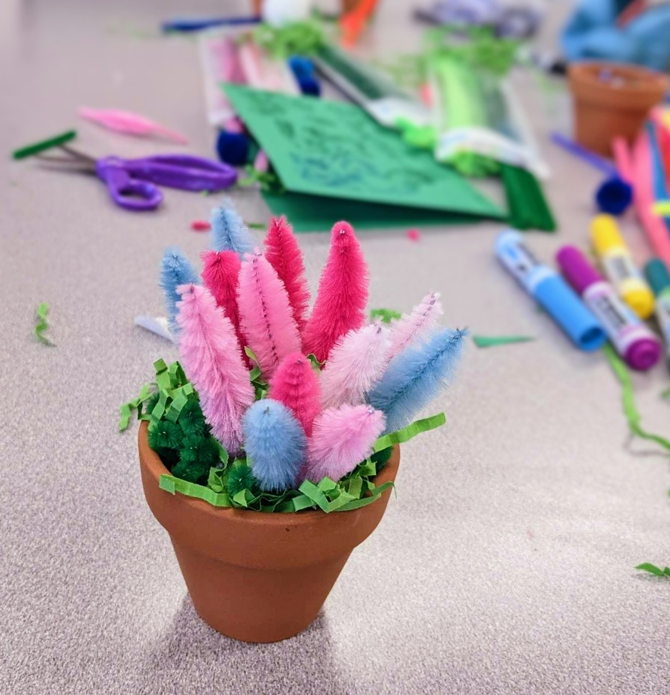
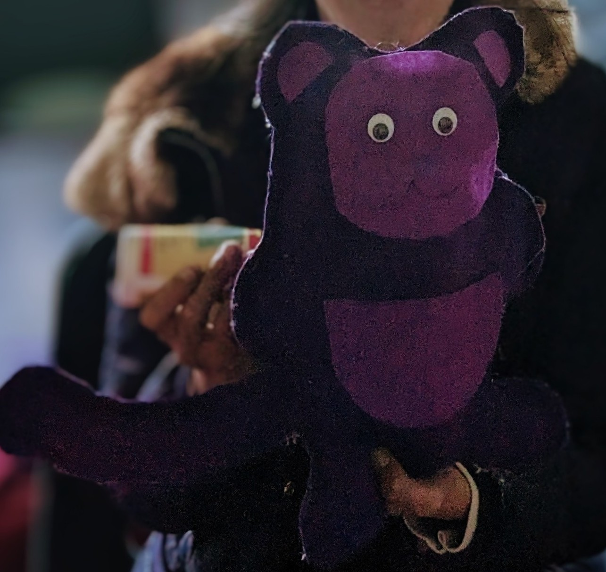

BayRise Arts & Crafts Enrichment Classes
We offer free arts & crafts classes to youths across the bay area, giving them a space for their artistic side to flourish. We strive to foster a supportive and inclusive learning environment where students can explore their passions, develop creativity, and gain confidence in their abilities. By bridging the opportunity gap through accessible education, we aim to create a more equitable future for all.
Age Range
The Arts & Crafts class is mostly tailored toward 6-12 year olds, but older kids can join if they want.
Who we work with
We teach our classes wherever we think kids can benefit from these added learning opportunities. We've partnered with schools, other non-profit organizations, and even groups of individuals.
Pricing (Free!)
Our classes are completely free, and all materials are provided because we believe that everyone deserves the opportunity to learn and succeed. In fact, we leave art supplies with every group of disadvantaged kids we teach. That way, they can continue their projects and learning even when we aren't there.
Sign Up
If you or your group is interested in any of our classes, contact us here.
Curricula
Every class has a unique project in which we provide a basic structure and materials. For young children who are discovering their passion for art, we offer a more structured approach, providing them with a safe, but somewhat limited, space to create. For older students, we try to provide less structure to further stoke the student’s creativity and encouraged them to take risks and venture into unexplored territories, giving them the skill set to create truly original and unique works of art. Some of our projects are listed below.
 

Pipe Cleaner Plants
The pipe cleaner plant is our most popular project, where students use pipe cleaners to sculpt flowers and then place them in decorated small pots.
With a wide range of pipe cleaner colors available, students can personalize their flowers to match their unique style and create distinct color combinations. Overall, the pipe cleaner plant project is a fun and educational activity that all students can enjoy.
Monster Plushes
Monster plushes are a beloved project that students can't get enough of. Using soft and colorful fabrics, students design unique plush monsters of various shapes and sizes. After they cut their designs out from felt and decorate them, a teacher will help glue and stuff their furry creation.
This project is not only fun but also helps develop skills such as sketching, cutting, and designing. Students can take pride in their creations and enjoy cuddling with their unique monster plushes for years to come.